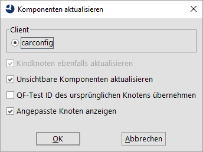

| Version 6.0.3 |
Im Laufe der Testerstellung können sich zum einen ungenutzte Komponenten im Komponentenbaum ansammeln. Hier können Sie ab und zu den Komponentenbaum bereinigen. Zum anderen können sich die Wiedererkennungsmerkmale durch Änderungen in der Applikationsoberfläche ändern. Bevor die Änderungen nach mehreren Oberflächenänderungen so stark werden, dass die Wiedererkennung bricht, macht es Sinn, in den betroffenen Fenstern und Dialogen 'Komponenten' aktualisieren durchzuführen.
Immer wenn eine Sequenz aufgezeichnet wird, werden für die Komponenten, die noch nicht in der Testsuite vorhanden sind, neue Knoten angelegt. Wird die Sequenz später gelöscht, bleiben die 'Komponenten' erhalten, daher haben 'Komponenten' eine gewisse Tendenz sich anzusammeln.
Das Kontextmenü für 'Fenster' und 'Komponente' Knoten hat zwei Einträge namens »Ungenutzte Komponenten markieren...« und »Ungenutzte Komponenten entfernen«, die jene 'Komponenten' markieren oder ganz entfernen, auf die sich kein anderer Knoten in dieser Testsuite mehr bezieht.
Vorsicht ist geboten, falls Sie Variablen in 'QF-Test ID der Komponente' Attributen verwenden, da die Automatik diese nicht erkennt.
Werden 'Komponenten' aus anderen Testsuiten referenziert, sollte diese zum selben Projekt gehören oder das Attribut 'Abhängige Dateien (umgekehrte Includes)' des 'Testsuite' Wurzelknotens korrekt gesetzt sein.
Es ist kaum zu vermeiden, dass sich die Komponenten des SUT im Lauf der Zeit verändern. Wie beschrieben stellt dies kein großes Problem dar, sofern Bezeichner konsequent eingesetzt werden, da QF-Test dann mit fast jeder Art von Veränderung zurechtkommt.
Ohne Bezeichner summieren sich Änderungen mit der Zeit und können einen Punkt erreichen, an dem die Wiedererkennung fehlschlägt. Um dieses Problem zu umgehen, sollten Sie die 'Komponenten' in QF-Test von Zeit zu Zeit an den aktuellen Stand des SUT anpassen. Dies kann mit Hilfe des Menüeintrags »Komponente(n) aktualisieren« in dem Kontextmenü geschehen, das Sie nach einem Klick mit der rechten Maustaste auf einen beliebigen Knoten unterhalb des 'Fenster und Komponenten' Knotens erhalten.
Hinweis Diese Funktion kann sehr viel Information auf einmal ändern, daher ist es schwierig zu beurteilen, ob alles wie erwartet funktioniert hat oder ob eine Komponente falsch erkannt wurde. Erstellen Sie daher immer eine Sicherheitskopie, bevor Sie viele Komponenten aktualisieren. Außerdem sollten Sie 'Fenster' für 'Fenster' vorgehen und darauf achten, dass die Komponenten, die Sie aktualisieren wollen, im SUT sichtbar sind (mit Ausnahme der Menüeinträge). Stellen Sie nach jedem Schritt sicher, dass die Tests immer noch sauber laufen.
Vorausgesetzt, dass eine Verbindung zum SUT besteht, erscheint bei Aufruf dieser Funktion folgender Dialog:
|
|  | ||
|
| Abbildung 5.13: Komponenten aktualisieren Dialog | ||
Sind Sie mit mehreren SUT Clients verbunden, müssen Sie zunächst einen für die Aktualisierung auswählen.
Legen Sie fest, ob Sie nur den/die selektierten 'Komponente' Knoten selbst oder auch dessen/deren Kindknoten aktualisieren wollen.
Sie können auch Komponenten einbeziehen, die im SUT momentan nicht sichtbar sind. Dies ist vor allem für Menüeinträge hilfreich.
Die 'QF-Test ID' eines aktualisierten Knotens wird beibehalten, wenn "QF-Test ID des ursprünglichen Knotens übernehmen" gewählt ist. Andernfalls erhält der Knoten eine von QF-Test generierte 'QF-Test ID', sofern sinnvolle Informationen zur Verfügung stehen. Andere Knoten, die sich auf diese 'QF-Test ID' beziehen, werden automatisch angepasst. QF-Test prüft dabei auch Abhängigkeiten in den Testsuiten, die zum selben Projekt gehören oder die im Attribut 'Abhängige Dateien (umgekehrte Includes)' des 'Testsuite' Knotens aufgeführt sind. Diese Testsuiten werden automatisch geladen und indirekte Abhängigkeiten ebenfalls aufgelöst.
Hinweis In diesem Fall werden die geänderten Testsuiten automatisch geöffnet, damit die Änderungen gespeichert oder rückgängig gemacht werden können.
Nach der Bestätigung mit "OK" wird QF-Test versuchen, die betreffenden Komponenten im SUT zu lokalisieren und aktuelle Informationen einzuholen. Komponenten, die nicht gefunden werden können, werden übersprungen. Anschließend werden die 'Komponente' Knoten an die aktuelle Struktur des GUI im SUT angepasst, was auch zur Folge haben kann, dass Knoten verschoben werden.
Hinweis Für große Hierarchien von Komponenten kann diese äußerst komplexe Operation einige Zeit in Anspruch nehmen, in extremen Fällen sogar einige Minuten.
Diese Funktion ist besonders nützlich, wenn Bezeichner zum ersten Mal im SUT verwendet werden. Wenn Sie bereits einige Tests erstellt haben, bevor Sie die Entwickler überzeugen konnten, Bezeichner zu vergeben, können Sie hiermit die Bezeichner in Ihre 'Komponenten' einbinden und gleichzeitig die 'QF-Test IDs' anpassen. Dies funktioniert am besten, wenn Sie eine SUT Version bekommen können, die bis auf die Bezeichner mit der vorherigen Version übereinstimmt.
Hinweis Sehr wichtiger Hinweis: Das Aktualisieren von ganzen Fenstern oder Hierarchien von Komponenten ab einer gewissen Größe führt oft zu dem Versuch, Komponenten zu aktualisieren, die im Moment nicht vorhanden oder unsichtbar sind. In so einem Fall ist es sehr wichtig, falsch-positive Treffer für diese Komponenten zu verhindern. Sie können dies erreichen, indem Sie vorübergehend die 'Bonus' und 'Herabsetzung...' Optionen zur Wiedererkennung (Abschnitt 37.3.4) verändern. Setzen Sie insbesondere die 'Herabsetzung für Merkmal' auf einen Wert unterhalb des Wertes der 'Mindestwahrscheinlichkeit', also z.B. auf 49, sofern Sie ansonsten die Standardwerte verwenden. Vergessen Sie nicht, die ursprünglichen Werte hinterher wiederherzustellen.
Wenn Sie die Einstellung der Optionen Gewichtung von Namen (Wiedergabe) und Gewichtung von Namen (Aufnahme) ändern müssen, zum Beispiel weil sich Bezeichner von Komponenten wider Erwarten als nicht eindeutig herausgestellt haben, ändern Sie zunächst nur die Option für die Aufnahme. Wenn die Aktualisierung beendet ist, ziehen Sie die Option für die Wiedergabe entsprechend nach.
| Letzte Änderung: 6.9.2022 Copyright © 1999-2022 Quality First Software GmbH |